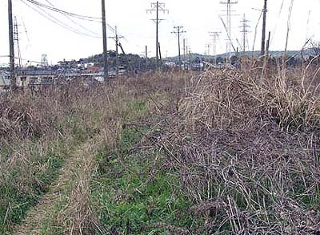
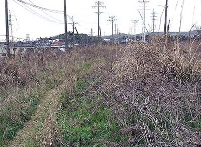

万田駅。昭和59年通勤電車廃止。後方、袴（はかま）岳、通称"万田山"。（米国・COCOさん撮影提供） 階段を上がった所にプラットホームがある（2003年4月1日撮影）  ホームは雑草に隠れている。奥に宮原竪坑が見える。（2003年4月1日撮影） ホームの一部（2003年4月1日撮影） （2003年4月1日撮影）
階段を上がった所にプラットホームがある（2003年4月1日撮影）  ホームは雑草に隠れている。奥に宮原竪坑が見える。（2003年4月1日撮影） ホームの一部（2003年4月1日撮影） （2003年4月1日撮影）
ホームは雑草に隠れている。奥に宮原竪坑が見える。（2003年4月1日撮影） ホームの一部（2003年4月1日撮影） （2003年4月1日撮影）
ホームの一部（2003年4月1日撮影） （2003年4月1日撮影）
（2003年4月1日撮影）